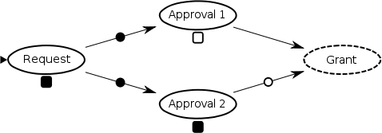
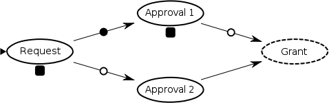
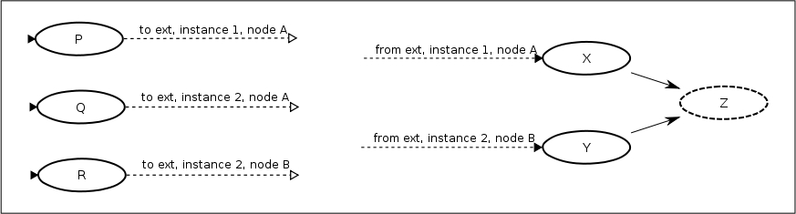

Reference Manual
1.0.0-rc3
Copyright © 2008-2009 Paul Lorenz
2009-06-28
Table of Contents
List of Figures
- 4.1. Linear Process Definition
- 4.2.
- 4.3. Manual Linear Backtracking
- 4.4. Manual Linear Backtracking: Execution
- 4.5.
- 4.6.
- 4.7.
- 4.8.
- 4.9.
- 4.10.
- 4.11. Manual Backtracking Split/Join
- 4.12.
- 4.13.
- 4.14.
- 4.15.
- 4.16.
- 4.17.
- 4.18.
- 4.19.
- 4.20.
List of Tables
Table of Contents
To help understand what workflow is, we start with definitions of the main components of a workflow system.
Actor - A person or program which performs some action .
Action - Something to be performed by an actor . Once an actor is notified that a given action is to be completed, they may perform it synchronously or asynchronously. It may take hours or days to complete the action .
Process Definition - A set of actions which need to be performed. The actions have a defined order in which they must be performed. Some actions may be performed concurrently with others.
Process - An instantiation of a process definition . Each process definition may have many processes running at once. A process definition can be compared to the on disk image of a program, where the process is comparable to an executing program (possibly with multiple threads of execution). Or from an OO perspective, a process definition is analogous to a class definition and a process is like an instantiated object of that class.
Workflow Engine - A program, library or API which can load process definitions and from them, generate and execute a processes .
Workflow - A label for systems which enable the building of process definitions and the execution of processes.
So what is so special about workflow? After all, dependencies can be handled programatically. If action A is followed by action B, then action A can just invoke action B when it is complete. Concurrency can be handed by threads.
What workflow generally provides over a manual implementation is
Ease of implementation
If there are complicated dependencies, these are tracked by the workflow engine. Each action doesn't need to worry about what comes before or after it. This also allows actions to be more easily abstracted and reused.
The workflow engine also ideally handles persistence. Processes can be long running, taking weeks or months to complete. The workflow engine will handle persisting the state of the workflow, so if the containing program dies, needs to be update or restarted, the process will not be lost.
Ease of definition
Workflow system generally provide an easier way of designing and/or specifying process definitions than by doing it manually in code.
Generally workflow systems can read in process definitions in a human readable file format.
Many workflow systems also provide visual editors.
The scenario here is of a small company which sells beach balls. They have a process for servicing an order.
The sales person receives an order and enters it into the system.
This includes the type number of products ordered and the payment information.
Once this is complete, the order will go to both billing and the warehouse.
While the warehouse people package and ship the order, the billing system will perform whatever credit card transactions are necessary.
Once the product is both shipped and billed, a marketing system will determine what promotional material and/or special offers to send to the customer, in order to elicit future business.
Graphically, the process could be represented as follows:
 |
This scenario concerns a news aggregation company called NewsCO which takes in news from various sources and republishes it in a variety of formats. Here we will look at a simplified workflow which handles two input formats.
RSS -> NewsCO XML format Converter (program)
Plain text -> NewsCO XML format converter (program)
Editor (person)
NewsCO XML web publisher (program)
NewsCO XML Analyzer (program)
NewsCO XML RSS publisher (program)
The process begins when an article arrives, either from an RSS feed or via a file drop in plain text format.
Conversion:
If the article is in RSS format, the RSS XML will be converted to a proprietary XML format (the NewsCO XML format)
If the article is in plain text, it will be parsed and converted to the NewsCO XML format.
If there is an error in the conversion process, the article will be handed to a human editor who will manually do the conversion
Publishing
The NewCO XML will be converted to a webpage and posted on a web site for consumption by the public. The web publisher is an asynchronous program which accepts XML and later provides notification when the publishing is complete. This could be a separate workflow.
NewsCO customers receive RSS feeds of articles based on keywords. The article will be scanned for keywords. A database entry will be created.
Each customer who has expressed interest in a keyword found in the article will have their RSS feed updated with a link to the published web article.
Graphically, the process could be represented as follows:
 |
Table of Contents
Graphs have been used for a long time to visually represent processes. Some examples are:
Unified Modeling Language (UML)
Graphs are visual, intuitive and ubiquitous. That finite state machines are graphs shows their expressive power. A graph combined with some storage is roughly equivalent to a Turing Machine, capable of executing any computation.
There are other ways of representing workflows. For example, one could just list out the actions along with their dependencies. The engine could then properly sequence the actions, For example, the simple Order Fulfillment example could be defined as
Enter Order for Sales depends on nothing
Bill Customer for Billing depends on 1
Ship Product for Warehouse depends on 1
Market to Customer for Marketing depends on 2, 3
While this would work fine for simple processes, it doesn't offer a way to define cycles. If, for example, the warehouse people determine that they are out of stock, they may need to send the workflow back to the sales department so they can interact with the customer. This mechanism also lacks a clear means of flow control. A single workflow could potentially cover the order fulfillment process for many different product types. It is likely that some sections of the workflow would only apply to specific products.
Table of Contents
Graph based workflow/business process management engines are common. They have areas of commonality, but they also vary greatly in concept and implementation. For example, there are differences in how concurrency and synchronization are modeled and in how modularity and re-use are promoted.
We begin with the some definitions, move on to features likely to be common across most engines, then explain Sarasvati specifics.
Graphs come with a set of common terms. To begin with, a graph is made up of a set of things, hereafter referred to as nodes and a set of connections between nodes , know as arcs .
Graph - A set of nodes, with a set of arcs connecting the nodes. While graphs have a wider applicability, graph here is synonymous with process definition.
Also know as: Process Definition, Network, Workflow
Node - An element of a graph. A node corresponds roughly to an action as defined previously. Nodes can be thought of as pieces of code, waiting to be executed when their turn comes.
Also known as: Vertex, Place
Arc - A directed connection between two nodes. Directed means that arcs have a start node and an end node. In some cases, an arc may have a label, or name.
Also know as: Edge, Transition
Predecessor - If two nodes are connected by an arc then the node at the beginning of the arc is the predecessor of the node at the end of the arc. How nodes are connected by arcs defines the order of execution. Generally a node may not execute until at least one, potentially many or all, of its predecessors have executed. Nodes may have many arcs exiting and entering them.
These definitions cover the parts of a process definition. However, they don't cover how that process definition is actually executed. When a process definition gets executed, the execution is called a process . Somehow, a process must track which nodes are being executed. This is generally accomplished by placing markers called token on the active nodes.
Process - An executing process definition. A process definition may have have zero, one or many processes executing at any given time.
Also known as: Case, Instance, Workflow
Token - The set of active tokens marks the current process state. Tokens generally point to a node which is currently executing. Tokens sometimes have associated state, which is a way of passing data from node to node.
Also know as: Execution
Let us start with a simple process definition, the classic 'Hello World'. When executed, this process will print out 'Hello, World!' and then complete.
First, we introduce a graphical notation for process definitions and execution. Not all the symbols will make sense immediately, but they will all be explained.
 |
The simplest useful process definition would consist of a simple node. Here is the graphical representation:

How will this process be executed? First the engine needs to determine where to start execution.
Start Node - A node at which a token will be placed when process execution begins.
There are various ways of handling this. For example, there may be a specific type of node designated for start positions. All nodes of this type will have tokens placed in them at process start. Alternately, nodes may have an attribute which indicates whether or not they are a start node, allowing any node to be a start node. Sarasvati takes this second approach.
Assuming that the 'Hello World' node is a start node, execution would begin by creating a new node token at the 'Hello World' node.
Node Token - A token situated at a node. Node tokens track the response of the node guard (see below). They may also have attributes.
With the addition of the node token, the process would now look like:

As you can see, the node now has an active node token stationed on it.
At this point the node has not yet been executed. Before it can be, its guard would need to be invoked.
Node Guard - Nodes have functionality associated with them, which will be executed when a node token is accepted into the node. However, before a node is executed, its guard will be executed. The guard is allowed one of three responses:
Accept - The node will be executed.
Discard - The node token will be marked as discarded and the node will not be executed.
Skip - The node will not be executed, however, processing will continue as if the node had completed execution normally.
By default, a node's guard will return Accept. The node will then be executed . This should cause 'Hello, World!' to be printed out.
Node Execution - When a node is executed, whatever custom logic has been assigned by the developer will run. To complete node execution, the node must inform the engine that that the given node token has been completed. Node completion may happen synchronously as part of the execution of the node function or it may happen later, asynchronously.
As there are no further steps in the process, it is now complete and looks like:

Process Completion - A process with no active tokens is considered complete.
Let's now example a slightly more complicated example. Instead of a single node, we'll have two, the first of which prints out 'Hello', the second prints out 'World'. It looks as follows:

The Hello node is a predecessor of the World node. This dependency is indicated by the directed arc.
As the Hello node is marked as a start node, a node token will be placed there when the process begins executing.

When the node token on Hello is completed, an arc token will be generated on the outgoing arc.

Arc Token - A token situated on an arc. Arc tokens exist so that nodes know when to execute. Arc tokens may not have attributes.
Whenever an arc token is created on an arc, the join strategy of the node at the end of the arc is evaluated, to determine if the node is ready to have a node token created at that node. The only time join strategies are not used is when a process is started. At that time all start node will have node tokens created on them.
join strategy - A join strategy determines if a node token should be created on a node. Evaluation of the join strategy is generally initiated by the processing of an arc token on an incoming arc to the node. The join strategy will determine two things:
Is the join complete? Some join strategies require multiple arc tokens to be present before a node token is created on the node. Others may be satisfied every time an arc token arrives.
Which arc tokens completed the join? Every arc token that participates in completed the join will be marked complete and will be noted as a parent of the new node token, preserving a history of the flow of execution.
Since the arc on which the arc token is situated goes into a node using theor join strategy , a node token will be created on World immediately.
or join strategy - The or join strategy will allow a new node token every time an arc token arrives at the node. This stands in contrast to a label-and join strategy , where active arc tokens must exist on all incoming arcs with the same name.
The process now looks like:

The World node will now run its guard and then execute. Finally the node token will be completed.

Let us now examine an example which contains concurrent execution.
The process describes an approval process.
A request is made
Two approvals must be obtained
The request is granted
The process looks like:
 |
This a simplified system, since it does not allow approvals to be denied.
There is more than one way that this process could be executed.
If the approvals are granted by people, the nodes will almost certainly be executed asynchronously. This means that when a token arrives at Approval 1 , the node will generate a notification to the user who is to do the approval. The token will then enter a wait state . Execution may continue elsewhere in the process, but this token will wait until the user enters the system and grants approval.
If approvals are done by software which does a check and then returns immediately the tokens will not have enter a wait state , but may continue immediately.
Wait State - When a token enters a node and the node is executed, it may choose not to immediately continue process execution at the end of the node method. In this case the token will remain in the node until it is complete asynchronously. While the token is waiting to be completed, it is considered to be in a wait state.
Let us view process execution for both these cases, starting with the case where approvals are done by people and thus tokens will need to enter wait states.
Execution will begin as usual, by placing a node token in the nodes marked as being start nodes.
The Request node will be executed. It generates a task for the requester to complete. Until the requester has filled out out the request and completed the task, the token will be in a wait state. During this time the process will look like:
 |
Question: What happens once the Request has been completed? Which arc or arcs will arc tokens be generated on?
Answer: Sarasvati requires that an arc name be specified when completing a node token. All arcs with this name will have arc tokens generated on them.
Some things to note:
Most arcs have no name specified. They are considered to have the 'default' name.
Usually when completing a node token, the default arc name will be given.
Each arc will have an arc token placed on it in turn. No specific order is guaranteed
When an arc token is placed on an arc, it will continue on to its end node immediately and see if the node can be executed.
So now the node token on Request has been completed and arc tokens will be generated on the outgoing arcs. First a node token will be generated on the upper arc (though order of arc execution is not guaranteed).
 |
This arc leads to a node which can be executed. The arc token will be completed and a node token will be placed in the Approval 1 node.
 |
Here the node token will enter a wait state. Since no further execution can take place here, an arc token will now be generated on the second outgoing arc.
 |
Again, since node Approval 2 can be executed immediately, the arc token will be completed and a node token will be created. It will also enter into a wait state once the notification to the user has been created.
 |
At some point one of the approvals will be completed. Let's say that it's Approval 2 . This will mark the node token complete and generate an arc token on the outgoing arc.
|  |
Now the engine will see if the Grant node can be executed. However, as the dashed border indicates, the Grant node is using the label-and join strategy. .
label-and join strategy - When an arc token arrives a node using the label-and join strategy, arc tokens must exist on all other arcs with the same name before the node will accept a node token.
Since there are two arcs with the 'default' name coming into Grant , and only one of them has an arc token, the node can not be executed at this time. Execution will halt at this point.
At some point later, the token at Approval 1 is completed. This generates an arc token on the outgoing node.
 |
Now when the engine tries to execute Grant it finds arc tokens on all the incoming 'default' arcs. These arc tokens are marked complete and a node token is generated on Grant .
 |
Once the Grant task is finished, its node token will also be completed and the process will be complete.
 |
As seen the previous example, a process may have multiple tokens active concurrently. Does this imply that each token executes in a separate thread? No. Concurrency here is like that of multiple programs running on a single chip. Each runs in turns, but may present the appearance of running simultaneously.
However, true multithreading can be done at the node level. Each node when executed, may hand off its work to a background thread. The node token will then enter a wait state, and other nodes may be executed. When the background task is complete, it may then complete the node token, allowing further execution.
Note that only one thread may safely execute the process at any given time, and care must be taken to serialize access to the process itself.
Lets now take a look at the same process, except now the approvals will be done by software and will not require a wait state.
The execution will be the same up to the point where Approval 1 is executing.
|
Previously, the node token went into a wait state. This time, the approval is done synchronously and the token will be completed. This will generate an arc token on the outgoing arc.
 |
Again, the Grant node is using the label-and join strategy, so it will wait for an arc token on the other incoming arc before executing. Execution will continue on the lower outgoing arc of Request .
|  |
Execution will continue into Approval 2 .
 |
This execution will also finish synchronously and an arc token will be generated on the outgoing arc.
 |
Execution will finish as before now that all required incoming arcs have tokens on them.
Now that we've seen how execution can split across arcs and join strategies can bring current executions back together, let us examine how to select which outgoing arcs receive tokens and which nodes get executed.
This example uses almost the same process as the previous example. The difference is that either or both approvals may be optional, depending on what is being requested.
Let us pick up execution after the request has been entered and an arc token generated on the upper arc:
|
Now the node token will be generated in Approval 1 .
|
However, remember that this does not mean that the node will immediately execute. First the guard must be invoked. Up until now, the guard has always been assumed to just return Accept . This time however, the guard is intelligent. It will check to see if this approval is required. If not, it will return a Skip response.
Skip - A guard response which indicates that the node should not be executed, but that execution should continue on the outgoing nodes. An arc name may be specifying indicated which arcs should be used. If no arc name is given, arcs with the default name (unnamed arcs) will be used.
Assume that Approval 1 is not required. The node token will marked as having skipped the node, and execution will continue on the outgoing arc.
Having seen Skip, let us examine how to use the Discard response from guards. The same basic process definition is used, only this time, the assumption is that only one of the guards is required.
The graph now looks like:
 |
Because we are using discard, only one token will reach Grant. This is why the Grant node is no longer a label-and join stragy.
Execution begins as normal. We pick up execution where a node token has been generated in Approval 1.
 |
In this case, the guard determines that Approval 1 is not required, and returns a Discard response.
Discard - A guard response indicating that the node token should be marked as discard, the node should not be executed and no tokens will be generated on outgoing arcs.
The process now looks like:
 |
The node token has been discarded, and execution has continued from the completion of Request where an arc token has been generated on the lower outgoing arc. Execution will now continue.
 |
Approval 2 will accept its node token and will continue normally.
 |
 |
Remember, because Grant is using the or join strategy, it will have a node token generated on it as soon as any arc tokens arrived.
 |
This same basic process could be implemented using a guard which returns Skip along with an arc name.
In this variant, a Select node has been inserted after Request . This node has no functionality, it only exists to give the guard a place to run.
 |
Let us pick it up after process started, as Select has a node token generated on it, and its guard is invoked.
 |
The Select guard will return a Skip response which includes the arc name on which to exit. All arcs with this name will have an arc token generated on them . In this case, let us say the guard determines that Approval 2 is required. It returns Skip two . An arc token is then generated on all arcs named two (of which is there only one in this case).
 |
From here execution continues as normal.
As mentioned previously, when a node token is completed, an arc name must be specified. Arc tokens will be generated on all outgoing arcs with that name. So the previous example could also be implemented like this:
 |
Instead of using the guard on the Select node, the Request node will specify which arc to exit on.
 |
If we again specify two , then an arc token will be generated on that arc.
 |
From there, execution will continue.
Much like any software, a set of process definitions can grow larger, more complex and more intertwined as time goes. One solution used in the broader software world is encapsulation. This involves pulling out common functionality and breaking up large pieces into smaller components. These same techniques can be used with a set of process definitions. Rather than using copy/paste, sections of process definitions that are common can be extracted. Large process definitions can be split out into smaller components.
Sarasvati supports two ways of doing encapsulation, each with it's own advantages and disadvantages. The first is graph composition , the second is nested processes . Both of these techniques allow complete process definitions and components that have been split out to be defined in separately. The difference lies in when they are composed.
Load-time composition - Graph composition brings the disparate elements together at load time. The main definition being loaded may refer to other definitions. These definitions will be loaded as well and they will all be combined into a single definition. This single definition will execute as if it had been defined in a single file.
Run-time composition - Nested processes use composition at runtime. The main definition will be loaded. When this definition is executed, a node may start a nested process. This nested process will execute and when completed, the main process will continue.
Now that we have general idea of how graph composition and nested processes compare, let us investigate them in more detail.
Graph composition - The set of process definitions may be seen as a single, disconnected graph. A node may contain arcs to nodes in other process definitions. These arcs are referred to as external arcs . When the process definition is loaded, referenced external process definitions will be loaded as well. All the process definitions will be composed into a single, larger graph. The external arcs will become regular arcs. The same external processes definition may be embedded more than once. Each external instance of an external process definition will be given a unique identifier.
Advantages
Interactions with external process definitions are not limited to a single node. The connections may be as complicated as within process definition.
Since the graph is not nested, execution is simple.
All nodes will share a single process variable scope, allowing easy sharing of variables.
Restrictions
Recursion is not allowed, since this would lead to an infinite loop during loading. NOTE: As in regular programing, recursive structures can be implemented using non-recursive techniques.
All nodes will share a single process variable scope. Sometimes it is desirable to have shared state for a subset of the nodes in a process definition.
The version of an external graph is set when the process definition is loaded, rather than when nodes from that graph are executed. If an external process definition is updated, process definitions referring to it must be reloaded as well to pick up the changes.
External Arc - An arc which has an endpoint in an external process definition. While normal arcs are always specified as originating in the node where they are defined (aka out arcs ), it is not possible to add arcs to an external process. Therefore external arcs may either be in arcs or out arcs . Note that external arcs may be named just like regular arcs.
Out Arc - An arc which starts in the defining node and ends in a specified node
In Arc - An arc which starts in a specified node and ends in the node in which it is defined.
External Instance - A specific external process definition may be referenced multiple times. It may also be imported into the referring process definition multiple times, or just a single time. Each external arc names a specific instance of the external process definition.
Nested Process - A node in an executing process may create a separate, new process (of the same or different process definition). This new process is known a nested process. The new process gets initialized with the process state of the containing process and the current token. When the nested process completes, the token in the containing process will be completed.
Advantages
The nested process will have it's own process state
Processes may nested recursively
Nested processes will always use the latest version process definition at the time the node is executed.
Restrictions
The interaction with the nested process must all be contained by a single node. The nested process will execute in isolation. The nodes in the nested process won't interact with the those of the containing process in any way.
Let's look at an examples of how this works in practice. Here is a small process definition which we want to embed. This process definition will be named ext .

It only has two nodes. Notice that both nodes are using the label-and join strategy, even though one node has no inputs and the other only has one. However, in the composed graph these nodes may have more inputs.
Next is the process definition which will be using ext.
 |
This process definition looks very different from previous examples. It isn't even fully connected.
Some things to note:
The external arcs are labeled with the process definition name, instance and node name that they are intended to link to.
In this case, all the arcs are connecting to the same instance of ext , instance 1.
Both in and out external arcs may connect to any node in the target external. They are not limited to just start nodes, for example.
When the graph is loaded, the composed version will look as follows:
 |
The previous example referenced only a single instance. Here is the example using two instances 'ext.
|  |
When it is loaded, the composed graph looks like:
 |
As you can see, we now have two copies of ext embedded in the process definition. One copy will be made for each unique instance referenced. A process definition can have references to any number of different external definitions and each external process definition can be imported any number of times.
The above example could not be implemented with nested processes because a nested process must be represented by a single node in the parent process. So, here is a similar, but simpler example using nested processes.
 |
Nodes
S
and
T
both refer to the nested process named
nested
. Note that
nested
is almost the same as
ext
, except that the first node is a start node. This is because
nested
will be executed as a separate process. If it didn't have a
start node, it would not execute.
When
S
and
T
execute, each will spawn a separate process. When
S
is executed, it will have an incomplete node token
t
. As part of execution it will start a new
nested
process
P
which have have the token
t
as a parent. When
P
completes, it will check if it has a parent token, and finding
that it does, will complete
t
. This will allow execution to continue in the original process.
While executing your process definitions, it may be desirable to have some shared state or to send data between nodes via the tokens. Sarasvati supports both these things via the execution environment . Each process has an environment on which attributes/variables can be set. In addition, each token also has its own environment.
Environment - A set of key/value attributes.
When using a memory backed engine, all environment attributes are stored in memory. However, when using a database backed engine, we may wish to persist only certain attributes. Also, storing objects in the database can be complicated, storing arbitrary objects in memory is easier than doing so in the database. By default, attributes are persistent , however, there is a separate set of variables which are transient .
Persistent Attributes - These attributes will be stored for the lifetime of the process. There may be restriction on what can be (easily) stored a persistent attribute, since it may need to be stored in a database table.
Transient Attributes - These attributes will be stored in memory, only as long as the process and/or token is in memory. For a memory backed engine, these have the same scope as the persistent attributes. There are no restrictions on what can be stored as a transient attribute.
If you want state that is accessible from anywhere during process execution, then attributes can be set on the process environment. These attributes are visible and mutable by all nodes.
Each node token also has its own environment. Arc tokens do not have an environment, because they do not execute in the same way that node tokens do, and thus have no need for private state. Node tokens are initialized with the state of their parent tokens .
Parent token - Each node tokens has zero to many parents.
A node token on a start node has no parents. It will start with an empty environment.
A node token on a node with one incoming arc of a given name has a single parent. Its environment will be copied from the parent.
A node token on a node using the labe-and join strategy may have multiple parents, one for each arc of the same name. In this case the environments of all the parents must be combined in some way. By default, each environment will be imported into that of the new node. So if more than one parent has an attribute with the same one, the last one imported will overwrite the previous values. This behavior may be overridden, but if this is a concern, then using process level attributes may be advisable.
Table of Contents
Using Sarasvati usually involves writing process definition files, along with custom node types. Sarasvati uses an XML file format for process definitions. These files can be loaded into in-memory graph structures and executed, or they can be loaded first into a database, and from there loaded and executed.
We first introduce the file format, then explain how to implement custom behavior. Finally, we discuss how to interact with the Sarasvati engine.
The process definition file format is defined by an XSD, which is available to view in the project SVN .
We'll explore the Sarasvati file format, starting with the root element and working from there, with examples interspersed.
This is the root element. It should indicate the XML namespace, that being:
http://sarasvati.googlecode.com/ProcessDefinition
Table 4.1. process-definition attributes
| Attribute Name | Usage | Is Required? | Default Value |
|---|---|---|---|
name | The unique name for this process definition. | Yes | N/A |
Table 4.2. process-definition nested elements
| Element | Description |
|---|---|
node |
Every process-definition must have a least one node defined.
|
external | An external declares a process definition to be included. More than one external process definition may be included and the same process definition may be included more than once with a different name for each include. |
Nodes in a process definition are defined by the node
element. Every node must have a name unique to that file.
Table 4.3. node attributes
| Attribute Name | Usage | Is Required? | Default Value |
|---|---|---|---|
name | The name of this node. The name must be unique within this process definition. | Yes | N/A |
type | The node type. Determines the node behavior. | No | node |
isStart | Specifies whether a node will be presented with a token when the process is started. | No | false |
joinType | Determines the join strategy the node should use when a token arrives. Some nodes may accept incoming tokens as soon as they arrives, others may act as gates, waiting until a certain number of nodes arrive or token exist on specific incoming arcs before executing. See below for the allowed join types. | No | or |
joinParam | Some join strategies, such as the token set join, may join based on this paramter. Alternately, this can be used by the custom join type as the developer desires. | No | N/A |
Table 4.4. node nested elements
| Element | Description |
|---|---|
guard | Each node may have a single, optional guard element. The guard is generally defined in the Rubric rules language and will be evaluated when the node's join strategy determines that the node is to be executed. The guard will determine if the node should be executed, skipped or if the newly created node token should be discarded. |
arc | Nodes may have zero to many arcs, pointing to other nodes in the same process definition. Arcs link together nodes and provide the paths along with the flow of execution proceeds. |
custom | Each node has a custom section which may contain any user defined elements. How data from these custom elements is loaded is explained in the section on custom node attributes below. |
Every node defines a join strategy, which is invoked when tokens arrive at the node and determines when the node is ready to be executed.
Table 4.5. node join types
| Type | Behavior |
|---|---|
or |
An or join will be satisfied any time an arc token arrives at the node.
|
and |
An and join will be satisfied when an arc token arrives and there are
arc tokens waiting at all other incoming arcs to the node. In most cases the
labelAnd is safer and more flexible.
|
labelAnd |
A labelAnd join will be satisfied when an arc token arrives
and there are arc tokens waiting at all other incoming arcs to the node which
share the same name/label as the arc that the arc token is arriving on.
|
tokenSetAnd |
A tokenSetAnd join will be satisfied when all active arc tokens
in the set are on incoming arcs to the same node and there are no active node tokens
in the token set. An exception will be raised if a non-token set token arrives.
|
tokenSetOr |
A tokenSetOr join will be satisfied when all active arc tokens
in the set are on incoming arcs to the same node and there are no active node tokens
in the token set. The or strategy will be used as a fallback if
a non-token set token arrives.
|
custom | Users may use custom join strategies. See the API reference for more detail. |
node- Nodes of this type will complete out on the default arc when they are executed. The node type can be useful if a synchronization point is needed. It can also be used as a choice mechanism, by specifying a guard which skips to selected arcs.wait- Nodes of this type will enter a wait state when executed. They will continue when completed by external logic. This can be useful when you need to wait on an external event, and no other logic is required.script- Requires ascriptelement which will contain a script to execute when the node is executed.
A node may contain a GuardLang statement, which will be executed as the node's guard. The guard element has no attributes and may contain no nested elements.
With just process-definition
and node a simple process definition
can be built.
The simplest process definition would be a single node. Graphically, it would look like:

The corresponding XML process definition would look like:
<?xml version="1.0"?> <process-definition name="simplest" xmlns="http://sarasvati.googlecode.com/ProcessDefinition"> <node name="node-one" isStart="true"/> </process-definition>
While there can be many nodes declared in a process definition, we have as yet, not defined a way of linking them together.
An arc
element declares an arc from the enclosing node to the node
with the name specified in the to
attribute. An arc is allowed no nested elements.
Table 4.6. arc attributes
| Attribute Name | Usage | Is Required? | Default Value |
|---|---|---|---|
to | Specifies the name of the node this arc goes to. | Yes | N/A |
name | Specifies the arc name. This name need not be unique. | No | null |
external |
If this arc is linking to an external (see below for more information on externals),
the name of the external being linked to. If an external attribute
is specified then the to attribute will refer to a node in the
external, not a locally defined node.
| No | null |
The following example contains three nodes.

<?xml version="1.0"?>
<process-definition
name="example2"
xmlns="http://sarasvati.googlecode.com/ProcessDefinition">
<node name="node-one" isStart="true">
<arc to="node-two"/>
<arc to="node-three"/>
</node>
<node name="node-two"/>
<node name="node-three"/>
</process-definition>
To indicate an arc, an
arc
element is added to the start node. The
to
attribute indicates the name of the target node. A node with
that name must exist in the same process definition file.
Here is an example with two start nodes. They both have arcs
to
node-three
, which uses the labelAnd join strategy. It will only execute once both
node-one
and
node-two
have completed.

<?xml version="1.0"?>
<process-definition
name="example3"
xmlns="http://sarasvati.googlecode.com/ProcessDefinition">
<node name="node-one" isStart="true">
<arc to="node-three"/>
</node>
<node name="node-two" isStart="true">
<arc to="node-three"/>
</node>
<node name="node-three" joinType="labelAnd"/>
</process-definition>
Now that we've seen how to create links between nodes in the same process definition, let us examine how to include external process definitions and create links to them.
An exernal process definition must have a declaration for each time it is to be included.
Table 4.7. external attributes
| Attribute Name | Usage | Is Required? | Default Value |
|---|---|---|---|
name | The name by which this external process definition will be referred to. The name must be unique within this process definition. | Yes | N/A |
processDefinition | The name of the process definition being included. The same process definition may be included more than once. | Yes | N/A |
Table 4.8. external nested elements
| Element | Description |
|---|---|
arc | Externals may have zero to many arcs. The arcs originate in the extenal process definition. They may end in nodes in the same process definition, in other externals or even in the same external. |
custom | Each external has a custom section which may contain any user defined elements. How data from these custom elements is made loaded is explained in the section on custom external attributes below. |
An arc element in an external declares an arc
from a node in the enclosing external to the node with the name specified in
the to attribute. An arc is allowed no nested elements.
Table 4.9. arc attributes
| Attribute Name | Usage | Is Required? | Default Value |
|---|---|---|---|
from | Specifies the name of the node in the external that this arc starts from. | Yes | N/A |
to | Specifies the name of the node this arc goes to. | Yes | N/A |
name | Specifies the arc name. This name need not be unique. | No | null |
external |
If this arc is linking to another external, this specifies the name of the external
being linked to. If an external attribute is specified then the
to attribute will refer to a node in the external, not a locally
defined node.
| No | null |
To examine external arcs, we'll need at least two process definitions.
This example is from the EngineConcepts section.
<?xml version="1.0"?>
<process-definition
name="ext"
xmlns="http://sarasvati.googlecode.com/ProcessDefinition">
<node name="A" joinType="labelAnd">
<arc to="B"/>
</node>
<node name="B" joinType="labelAnd"/>
</process-definition>
It looks like:
The graph which contains external arcs going to 'ext', is below.
<?xml version="1.0"?>
<process-definition
name="example4"
xmlns="http://sarasvati.googlecode.com/ProcessDefinition">
<node name="P" isStart="true">
<arc external="1" to="A"/>
</node>
<node name="Q" isStart="true">
<arc external="2" to="A"/>
</node>
<node name="R" isStart="true">
<arc external="2" to="B"/>
</node>
<node name="X">
<arc to="Z"/>
</node>
<node name="Y">
<arc to="Z"/>
</node>
<node name="Z" joinType="labelAnd"/>
<external name="1" processDefinition="ext">
<arc from="A" to="X"/>
</external>
<external name="2" processDefinition="ext">
<arc from="B" to="Y"/>
</external>
</process-definition>
It looks like:
When the process definition is loaded into memory, it will look like:
|
The process definition file format also supports custom elements and attributes, but before we discuss that, the API needs to be introduced.
The main interface for interacting with process definitions and
processes is
Engine
:
package com.googlecode.sarasvati;
public interface Engine
{
GraphProcess startProcess (Graph graph);
void startProcess (GraphProcess process);
void cancelProcess (GraphProcess process);
void finalizeComplete (GraphProcess process);
void finalizeCancel (GraphProcess process);
void completeExecution (NodeToken token, String arcName);
void completeAsynchronous (NodeToken token, String arcName );
void executeQueuedArcTokens (GraphProcess process);
GraphRepository<? extends Graph> getRepository ();
GraphFactory<? extends Graph> getFactory ();
GraphLoader<? extends Graph> getLoader ();
void addNodeType (String type, Class<? extends Node> nodeClass );
void fireEvent (ExecutionEvent event);
void addExecutionListener (ExecutionListener listener, ExecutionEventType...eventTypes);
void addExecutionListener (GraphProcess process, ExecutionListener listener, ExecutionEventType...eventTypes);
void removeExecutionListener (ExecutionListener listener, ExecutionEventType...eventTypes);
void removeExecutionListener (GraphProcess process, ExecutionListener listener, ExecutionEventType...eventTypes);
ExecutionListener getExecutionListenerInstance (String type) throws WorkflowException;
void setupScriptEnv (ScriptEnv env, NodeToken token);
}
Process definitions are stored in classes implementing the
Graph
interface.
package com.googlecode.sarasvati;
public interface Graph
{
String getName ();
int getVersion ();
List<? extends Arc> getArcs ();
List<? extends Arc> getInputArcs (Node node);
List<? extends Arc> getInputArcs (Node node, String arcName);
List<? extends Arc> getOutputArcs (Node node);
List<? extends Arc> getOutputArcs (Node node, String arcName);
List<? extends Node> getStartNodes ();
List<? extends Node> getNodes ();
}
A
Graph
contains instances of
Node
and
Arc
.
Node
is where the developer can provide custom functionality, and has
the following API:
package com.googlecode.sarasvati;
public interface Node extends Adaptable
{
String getName ();
String getType ();
boolean isJoin ();
boolean isStart ();
String getGuard ();
Graph getGraph ();
boolean isExternal ();
GuardResponse guard (Engine engine, NodeToken token);
void execute (Engine engine, NodeToken token);
}
When the engine determines that a node is ready to execute, it will follow this flow:
Generate a
NodeTokenpointing to that node.Execute the
guardfunction on the node. This will return aGuardResponse.The
GuardResponsecontains aGuardAction, which is an enum having valuesAcceptToken,DiscardTokenandSkipNode.
If the action is
AcceptToken, theexecutemethod will be called. The process will not continue until theEngine#completeExecutionmethod is invoked. It must be invoked with the name of the arcs on which to generateArcTokens.If the action is
DiscardToken, the token is marked complete and no further execution will take place from this set of tokens.If the action is
SkipNode,Engine.completeExecutionwill be called with the arc name contained in theGuardResponse.
To provide custom behavior to your nodes, you will override the
execute
method on
Node
. Sarasvati currently provides two implementations of the base
API, one memory backed and one database backed, implemented
using Hibernate. Other implementations could be made using, for
example, pure JDBC or some other persistence mechanism. There
are three base classes for nodes.
com.googlecode.sarasvati.mem.MemNodecom.googlecode.sarasvati.hib.HibNodecom.googlecode.sarasvati.CustomNode
If using only the memory backed implementation,
MemNode
should be extended. If using only the hibernate backend, nodes
should subclass HibNode.
CustomNode
can be used with either or both backends. In to store custom
attributes in the database, it uses a key/value pair table.
CustomNode
can only be used if the database mapping doesn't need to be
explicitly defined.
To demonstrate use of each implementation, we start with a node that just prints out "Hello, World". We start with the process definition.
<?xml version="1.0"?> <process-definition name="hello-world" xmlns="http://sarasvati.googlecode.com/ProcessDefinition"> <node name="hello" type="helloWorld" isStart="true"/> </process-definition>
If using the memory implementation, the subclass would look like:
package com.googlecode.sarasvati.example.mem;
import com.googlecode.sarasvati.Arc;
import com.googlecode.sarasvati.Engine;
import com.googlecode.sarasvati.NodeToken;
import com.googlecode.sarasvati.mem.MemNode;
public class HelloNode extends MemNode
{
@Override
public void execute (Engine engine, NodeToken token)
{
System.out.println( "Hello, world!" );
engine.completeExecution( token, Arc.DEFAULT_ARC );
}
}
The hibernate version would look like:
import javax.persistence.DiscriminatorValue;
import javax.persistence.Entity;
import com.googlecode.sarasvati.Arc;
import com.googlecode.sarasvati.Engine;
import com.googlecode.sarasvati.NodeToken;
import com.googlecode.sarasvati.hib.HibNode;
@Entity
@DiscriminatorValue( "helloWorld" )
public class HelloNode extends HibNode
{
@Override
public void execute (Engine engine, NodeToken token)
{
System.out.println( "Hello, World!" );
engine.completeExecution( token, Arc.DEFAULT_ARC );
}
}
The hibernate version would also require an insert into the
wf_node_type
table, with type, description and behaviour.
insert into wf_node_type (id, description, behaviour) values ( 'helloWorld', 'Says hello to the world', 'helloWorld' )
The behaviour column ties the type to a discriminator specified on the subclass. This allows having multiple types with the same implementation class, if that was desired.
The backend independent version would look like:
import com.googlecode.sarasvati.Arc;
import com.googlecode.sarasvati.CustomNode;
import com.googlecode.sarasvati.Engine;
import com.googlecode.sarasvati.NodeToken;
public class HelloNode extends CustomNode
{
@Override
public void execute (Engine engine, NodeToken token)
{
System.out.println( "Hello, World!" );
engine.completeExecution( token, Arc.DEFAULT_ARC );
}
}
For use with the hibernate backend, a row would still need to be
added to the wf_node_type table.
insert into wf_node_type (id, description, behaviour) values ( 'helloWorld', 'Says hello to the world', 'custom' )
Now we can load the process into memory, or into the database.
This is done using a
GraphLoader
, which can be retrieved from the appropriate engine. Before
loading the process definition, you will need to tell the engine
about your custom node types.
The steps are
Create an engine of the appropriate type
Register custom node types
Load the process definition from XML file
Get the loaded graph from the graph repository associated with the engine
Start a new GraphProcess using the graph
Here are the steps in code for the memory backed implementation.
MemEngine engine = new MemEngine();
// Tell engine about our custom node type
engine.addNodeType( "helloWorld", HelloNode.class );
// Load the process definition (this can throw LoadException or JAXBException
// The graph will be stored in the GraphRepository for this engine
engine.getLoader().load( "/path/to/hello-world.wf.xml" );
// Get the graph from the GraphRepository
Graph graph = engine.getRepository().getLatestGraph( "hello-world" );
// start a graph process
GraphProcess process = engine.startProcess( graph );
Here are the steps in code for the hibernate backed
implementation. It assumes that you have a means of creating a
hibernate Session object.
Session session = ...; // get hibernate session
HibEngine engine = new HibEngine( session );
// Tell engine about our custom node type
engine.addNodeType( "helloWorld", HelloNode.class );
// Load the process definition (this can throw LoadException or JAXBException
// The graph will be stored in the GraphRepository for this engine
engine.getLoader().load( "/path/to/hello-world.wf.xml" );
// Get the graph from the GraphRepository
Graph graph = engine.getRepository().getLatestGraph( "hello-world" );
// start a graph process
GraphProcess process = engine.startProcess( graph );
Here are the steps in code using the backend independent custom
type with MemEngine.
MemEngine engine = new MemEngine();
// We can either register the type with the Engine or with the DefaultNodeFactory
// directly.
// Either tell the engine about our custom node type
engine.addGlobalCustomNodeType( "helloWorld", HelloNode.class );
// or tell the DefaultNodeFactory about the node type directly
DefaultNodeFactory.addGlobalCustomType( "helloWorld", HelloNode.class );
// Load the process definition (this can throw LoadException or JAXBException
// The graph will be stored in the GraphRepository for this engine
engine.getLoader().load( "/path/to/hello-world.wf.xml" );
// Get the graph from the GraphRepository
Graph graph = engine.getRepository().getLatestGraph( "hello-world" );
// start a graph process
GraphProcess process = engine.startProcess( graph );
The call to startProcess
will create tokens on the start nodes and will continue
executing the process until it completes or enters a wait state.
Often, custom nodes will need some information with which to do their work. Sarasvati supports this in two ways.
The schema for process definition files has a
<custom>
element which contains an
<xs:any>
element at the end of the node definition. Custom elements may
be added here. These can be automatically mapped to properties
on custom nodes.
For example, given the following custom node:
public class CustomNode extends MemNode
{
String foo;
public String getFoo ()
{
return foo;
}
public void setFoo (String foo)
{
this.foo = foo;
}
@Override
public void execute (Engine engine, NodeToken token)
{
// do something ...
engine.completeExecution( token, Arc.DEFAULT_ARC );
}
}
The following process definition would load the value
test into the custom
property.
<?xml version="1.0"?>
<process-definition
name="example1"
xmlns="http://sarasvati.googlecode.com/ProcessDefinition">
<node name="test" type="custom" isStart="true">
<arc to="1"/>
<custom>
<foo>test</foo>
</custom>
</node>
</process-definition>
There several things to note with custom elements.
All custom elements must be contained within the
<custom>tag.Non-string properties on custom node types are supported.
Support for primitive types such as boolean, byte, char, short, int, long, float, double as well as their corresponding object types is built in.
Support for non-primitive types can be added
Implement
com.googlecode.sarasvati.env.AttributeConverterRegister the new mutator using the
setConverterForTypemethod (which takes a class and anAttributeConverter) oncom.googlecode.sarasvati.env.AttributeConverters.
Nested objects are supported. For example:
<custom>
<task>
<name>test</name>
</task>
</custom>
The loader would invoke
getTask().setName( ... )
on the custom node.
Attributes are also supported. How they are mapped is based on the contents of the element the attribute is on. If the element has child elements, the attribute will get mapped as a child property. If the element is itself a property, the attribute name will be combined with the element name to get the property name.
<custom>
<task user="pat">
<name>test</name>
</task>
</custom>
This would map the
name
element value to
getTask().setName( ... )
and the
user
attribute to
getTask().setUser( ... )
.
However, the following would be mapped differently:
<custom>
<task user="pat">
test
</task>
</custom>
This would map the text in the
task
element to
setTask( ... )
and the
user
attribute to
setTaskUser( ... )
.
You may also provide custom loading via a subclass of
NodeFactory. It has the following interface:
public interface NodeFactory
{
Node newNode (String type) throws LoadException;
void loadCustom (Node node, Object custom) throws LoadException;
}
The custom data may be null, a single object, or a list of
objects. The object or objects will either be elements of
org.w3c.dom.Element
or JAXB objects, if you have a JAXB mapping for your custom XML.
Instances of
NodeFactory
may be registered on
GraphLoader
.
Here we examine a more complicated example, which uses custom attributes.
<?xml version="1.0"?>
<process-definition
name="example1"
xmlns="http://sarasvati.googlecode.com/ProcessDefinition">
<node name="start" isStart="true">
<arc to="1"/>
</node>
<node name="1" type="task">
<arc to="2"/>
<arc to="3"/>
<custom>
<taskName>Enter order</taskName>
<taskDesc>
Enter order and billing info
</taskDesc>
</custom>
</node>
<node type="task" name="2">
<arc to="4"/>
<custom>
<taskName>Bill Customer</taskName>
<taskDesc>
Bill the Customer
</taskDesc>
</custom>
</node>
<node type="task" name="3">
<arc to="4"/>
<custom>
<taskName>Ship product</taskName>
<taskDesc>
Package and ship product
</taskDesc>
</custom>
</node>
<node type="task" name="4" joinType="labelAnd">
<custom>
<taskName>Market to Customer</taskName>
<taskDesc>
Send marketing material to customer
</taskDesc>
</custom>
</node>
</process-definition>
We will need a couple of classes to represent tasks and their state. First we look at the memory based implementation.
First we have an enum for task states.
public enum TaskState { Open, Completed, Rejected }
Next is the Task class.
public class Task
{
protected NodeToken nodeToken;
protected String name;
protected String description;
protected TaskState state;
public Task (NodeToken nodeToken, String name, String description, TaskState state)
{
this.nodeToken = nodeToken;
this.name = name;
this.description = description;
this.state = state;
}
public NodeToken getNodeToken ()
{
return nodeToken;
}
public void setNodeToken (NodeToken nodeToken)
{
this.nodeToken = nodeToken;
}
public String getName ()
{
return name;
}
public String getDescription ()
{
return description;
}
public TaskState getState ()
{
return state;
}
public void setState (TaskState state )
{
this.state = state;
}
public boolean isRejectable ()
{
Node node = getNodeToken().getNode();
return !node.getGraph().getOutputArcs( node, "reject" ).isEmpty();
}
}
In our simple example, we need some way of tracking which tasks have been created.
public class TaskList
{
protected static List<Task> tasks = new LinkedList<Task>();
public static List<Task> getTasks ()
{
return tasks;
}
}
Finally, the custom node for generating tasks
public class TaskNode extends MemNode
{
protected String taskName;
protected String taskDesc;
public String getTaskName ()
{
return taskName;
}
public void setTaskName (String taskName)
{
this.taskName = taskName;
}
public String getTaskDesc ()
{
return taskDesc;
}
public void setTaskDesc (String taskDesc)
{
this.taskDesc = taskDesc;
}
@Override
public void execute (Engine engine, NodeToken token)
{
Task newTask = new Task( token, getTaskName(), getTaskDesc(), TaskState.Open );
TaskList.getTasks().add( newTask );
}
}
When a task node is executed, it will create new
Task
instance and add it to a task list. A task can be completed or
rejected as seen in the following code snippet:
Task t = ...;
if ( isCompletion )
{
t.setState( TaskState.Completed );
engine.completeExecution( t.getNodeToken(), Arc.DEFAULT_ARC );
}
else if ( isReject && t.isRejectable() )
{
t.setState( TaskState.Rejected );
engine.completeExecution( t.getNodeToken(), "reject" );
}
The primary difference with the database/Hibernate version, is
that the node and tasks will require database backing. Let us
look at the TaskNode class.
@Entity
@DiscriminatorValue( "task" )
@SecondaryTable( name="wf_node_task", pkJoinColumns=@PrimaryKeyJoinColumn(name="id"))
public class TaskNode extends HibNode
{
@Column (name="name", table="wf_node_task")
protected String taskName;
@Column (name="description", table="wf_node_task")
protected String taskDesc;
public TaskNode() { /* Default constructor for Hibernate */ }
public String getTaskName ()
{
return taskName;
}
public void setTaskName (String taskName)
{
this.taskName = taskName;
}
public String getTaskDesc ()
{
return taskDesc;
}
public void setTaskDesc (String taskDesc)
{
this.taskDesc = taskDesc;
}
@Override
public void execute (Engine engine, NodeToken token)
{
HibEngine hibEngine = (HibEngine)engine;
Session session = hibEngine.getSession();
TaskState open = (TaskState)session.load( TaskState.class, 0 );
Task newTask = new Task( (HibNodeToken)token, getTaskName(), getTaskDesc(), open );
session.save( newTask );
}
}
It is often useful to track state associated with a process or tokens. Sarasvati
provides several environments in which state can be placed. Some environments
are defined solely by the contents of a process definition, and are therefore
readonly. Readonly environments are represented by the
ReadEnv
interface. Most environments are read-write and are represented by the
Env interface,
which extends from ReadEnv.
The Env interface supports both persistent and transient attributes.
Table 4.10. Environment Attribute Types
| Type | Behavior |
|---|---|
| Persistent |
Must be serializable to the database. All primitives and object version of the primitives, as
well as String and Date are supported by default. Support for other types may be added
by defining an AttributeConverter,
which is then registered with the
AttributeConverters class,
using the setConverterForType method.
|
| Transient | Transient attributes are only stored as long as the process is in memory. They are a convenient places to cache values during process execution. Because they aren't persisted to a database, there is no restriction on what types can be stored. |
A process environment is read-write and is shared across an entire process.
GraphProcess p = ...;
Env env = p.getEnv();
env.setAttribute( "foo", "test" );
env.setAttribute( "bar", 5 );
String foo = env.getAttribute( "foo" );
int bar = env.getAttribute( "foo", Integer.class );
The node token environment is read-write. Node token state is only visible to the given token, however tokens inherit the environment of their parents. Token state is initialized using the following rules:
If a token has no parents, it will start with an empty environment.
If a token has one parent, it will inherit the environment of its parent.
When a child token inherits the environment of it's parent, it may point directly to the parent's environment, until the child writes to the environment, at which point the environment will be copied. This means that if the parents writes to the environment after children have been created, and the children have not written to their environments, these changes will be visible to the children.
If a token has multiple parents parent, it will inherit the environment of its parent.
If a token has multiple parents parent with overlapping attribute names, the child environment wil get one the value from one of the parents, generally whichever is merged into the child environment last.
NodeToken t = ...;
Env env = t.getEnv();
env.setAttribute( "foo", "test" );
env.setAttribute( "bar", 5 );
String foo = env.getAttribute( "foo" );
int bar = env.getAttribute( "foo", Integer.class );
To read from both the process and node token environments, use the
NodeToken#getFullEnv() method. It will return
an Env which will read first from node token environment
and, if no attribute is defined there, read from the process environment.
All writes will affect the node token environment.
This is implemented using NestedEnv, which can be used to stack any combination of environments.
When working with token sets, there are two environments available.
An environment shared by all tokens in the token set
An environment specific to each member index. For example, if a token set is generated with three members, then the first token will have index
0, the second with have index1and the third will have index2. Any tokens generated from the first token will also have index0, until such point as the token set is joined and is marked complete.
To see how token set environments are used, take as an example an approval process. The token set is generated as follows:
Map<String,List<?>> initialMemberEnv = new HashMap<String, List<?>>();
String[] groups = new String[] { "Accounting",
"Security",
"Operations" };
initialMemberEnv.put( "group", Arrays.asList( groups ) );
Env tokenSetEnv = new MapEnv();
tokenSetEnv.setAttribute( "deadline", 3 );
engine.completeWithNewTokenSet(
token, // the token being completed
Arc.DEFAULT_ARC, // the name of the arc(s) to exit on
"approvals", // name to give the new token set
3, // number of tokens to generate on each arc
// with the given name
true, // completing asynchronously
tokenSetEnv, // initial token set env
initialMemberEnv // token set member env
);
This generates a token set with three tokens in it. They all share a common deadline
attribute, but each will see a different value for the group attribute. These
attributes can be access from the tokens in the token set as follows:
// Access the token set environment
Env setEnv = token.getTokenSet( "approvals" ).getEnv();
int deadline = setEnv.getAttribute( "deadline", Integer.class );
// Access the environment specific to this token within the token set
Env env = token.getTokenSetMember( "approvals" ).getEnv();
String group = env.getAttribute( "group" );
When defining an external in a process definition, attributes may be defined
for that external. Those attributes will be visible to nodes in the referenced
external.
In the following process definition, when node A is executed,
it will print out the values defined for attributes named foo
and bar. If the process definition were executed directly,
both values would be undefined.
<process-definition
name="external-env-one"
xmlns="http://sarasvati.googlecode.com/ProcessDefinition">
<node name="A" type="script">
<custom>
<execute type="js">
var env = token.getNode().getExternalEnv();
System.out.println( "foo: " + env.getAttribute( "foo" ) );
System.out.println( "bar: " + env.getAttribute( "bar" ) );
</execute>
</custom>
</node>
</process-definition>
Process definition external-env-one can be included in external-env-two,
as demonstrated below. If executed, foo would now have the value
hello and bar would have the value world.
<process-definition
name="external-env-two"
xmlns="http://sarasvati.googlecode.com/ProcessDefinition">
<node name="B">
<arc external="one" to="A"/>
</node>
<external name="one" processDefinition="external-env-one">
<custom>
<foo>hello</foo>
<bar>world</bar>
</custom>
</external>
</process-definition>
The values defined for externals can be overriden. This can happen when the proces definition which
defines the external is itself references as an external, as below. Now, foo
will have the value goodbye, while bar will retain the
value world.
<process-definition
name="external-env-three"
xmlns="http://sarasvati.googlecode.com/ProcessDefinition">
<node name="C" isStart="true">
<arc external="two" to="B"/>
</node>
<external name="two" processDefinition="external-env-two">
<custom>
<foo>goodbye</foo>
</custom>
</external>
</process-definition>
It is often useful to have a callback mechanism for various events in the execution of the workflow. Sarasvati allows registering listeners either globally or per-process. Support for specifying listeners per-graph will be forthcoming.
Execution listeners must implement the ExecutionListener interface. Because execution listeners may be added to processes that are serialized to a database, there are some rules around how they should be built.
Execution listeners are stored in the database simply by classname. They must therefore have a public default constructor.
Instances of an execution listeners may be shared across threads and should therefore be thread-safe. For performance reasons, they should ideally be stateless, allowing them to be unsychronized.
Here is an example listener which prints out events as they occur.
package com.googlecode.sarasvati.example;
import com.googlecode.sarasvati.event.EventActions;
import com.googlecode.sarasvati.event.ExecutionEvent;
import com.googlecode.sarasvati.event.ExecutionListener;
public class LoggingExecutionListener implements ExecutionListener
{
@Override
public EventActions notify (final ExecutionEvent event)
{
System.out.println( event.getEventType() + ": " +
" Process: " + event.getProcess() +
" NodeToken: " + event.getNodeToken() +
" ArcToken: " + event.getArcToken() );
return null;
}
}
This listener could be register for all processes as follows:
// Add listener for all event types
engine.addExecutionListener( LoggingExecutionListener.class );
// Add listener for only the arc token and node token completed events
engine.addExecutionListener( LoggingExecutionListener.class,
ExecutionEventType.ARC_TOKEN_COMPLETED,
ExecutionEventType.NODE_TOKEN_COMPLETED );
One can also specify a particular process to listener to.
// Add listener for all event types
engine.addExecutionListener( process, LoggingExecutionListener.class );
// Add listener for only the arc token and node token completed events
engine.addExecutionListener( process, LoggingExecutionListener.class,
ExecutionEventType.ARC_TOKEN_COMPLETED,
ExecutionEventType.NODE_TOKEN_COMPLETED );
Listeners aren't limited to a passive. In some cases they may
affect workflow processing by returning a
EventActions with an appropriate
EventActionType. The actions that may be
taken are:
An execution listener may prevent a process that is in pending complete state from moving to complete state. This is to allow end of workflow processing to happen asynchronously.
Similarly, an execution listener may prevent a process that is in pending cancel state from moving to cancelled state.
An execution listener may prevent a node token that has just been accepted into a node from executing. This may be used to implement delayed node execution based on timer.
Here is a listener that creates and returns EventActions.
public class DelayExecutionListener implements ExecutionListener
{
@Override
public EventActions notify (final ExecutionEvent event)
{
if ( event.getEventType() ==
ExecutionEventType.PROCESS_PENDING_COMPLETE )
{
return new EventActions(
EventActionType.DELAY_PROCESS_FINALIZE_COMPLETE );
}
return null;
}
}
In graph based workflow, execution proceeds forward from node to node along directed arcs. However, it happens that we wish to allow execution to return to nodes where it has already been. Sometimes this is done because some action needs to be performed repeatedly. Other times, it's because something has gone wrong, and we need to go back to an earlier point to fix things and go back through the process. Here we focus primarily on the second case, and look at different ways of accomplishing this.
Here is a simple, linear workflow:

In this case, there is only one progression that can be made. Using
squares for node tokens and triangles for arc tokens, the resulting
execution looks like:

What if we wish to let a user choose to send the workflow backwards,
instead of forwards, say to fix a mistake made earlier. If we
wanted to be able to go back, we'd have to set up arcs going
backwards. Assuming, we want maximum flexibility, we'd end up with
a process definition that looked like:

Now we could go from A to B to C, back to B to C to D, back to B to C to
D and done. The execution would look like:

Note that the arc tokens now display the arc name.
We have gained flexibility, but at the cost of making the workflow much more complex. The number of arcs has tripled. What if instead, we could use the existing arcs? After all we know where we've been, and we just wish to go back to a previous good state. So, rather than having to make explicit arcs that go back to all conceivable previous states, we can just backtrack. In other words we can just trace our footsteps backwards to where we were.
So, lets says we've gotten up to C. At this point, the process execution history looks like:

Now we wish to backtrack to B. If we
retrace our steps, the process history will now look like:

Note that when we traverse arc 2
backward, it's marked in red. This is to mark that we've gone
backwards along that arc. The node tokens on B
and C, as well as the forward moving arc token on
2 are also marked, but in blue. This is to
note that these actions have been backtracked. When node tokens are
backtracked, they are given the opportunity to undo whatever work
they did, send out notifications, or do whatever else is required.
We can now move forward again, this time going up to D, where the process execution history looks like:

If from here, we once again wish to return to B, the
execution history will look like:

Note that since we are somewhat literally retracing our steps, to
get from D to B
we created backwards tokens at arc 3,
node C and arc 2.
The corresponding forward tokens have been marked as
backtracked.
From here we now finish, and go to the end.

Let us now examine a process definition which has splits and joins.

These complicate manual backtracking a great deal.
If one has multiple, concurrent node tokens active after a split, backtracking one of them means that all must be backtracked. The one which has been backtracked must out and find all incomplete concurrent tokens and complete them. It must also set a marker indicating that backtracking should occur. All the tokens must then first be collected by an intermediary node, which will test to see if a backtrack is required. It will then send execution forward or back based on this test.
If all tokens which were generated from the split aren't collected and sent back as a single token then each token sent back to the split will generate a new set of tokens from the split. This could cause many duplicates to be generated.
Here is an example of a graph which would be roughly equivalent to the previous graph, but allows manual backtracking.

It has a great deal many more arcs, as well as a more complicated
structure, to accommodate backtracking to the split.
To see how automated backtracking would work, let us first progress from A to B to where both C and D are open.

We can now attempt to backtrack to B.

The engine will follow all execution history which emanated from
B and attempt to reverse it. So we can see
that it flows backwards from C and
D backwards to B.
If we now attempt to backtrack one more step to A, the execution history will look like:

Though this appears to be a simple linear backtrack, it's actually
slightly complicated. The history starting from A
includes the backtracking we just did. So the engine must traverse
this to get to the current active tokens and backtrack them.
If instead, we were to backtrack directly from when C and D were open, back to A, the execution history would look as follows:

It looks almost the same, except that the second B
is marked as a backwards execution, since this time, we went
straight across it, instead of stopping there, and then continuing
backwards.
We'll use the same process definition as we used for demonstrating splits.
Going back from a join is both more and less problematic than a split. A
join can act as a split and send tokens back all of its inputs.
However, it is very difficult to go back to just one of the
inputs. If only one of the join inputs is reactivated, then the
join will never fire, since it won't have all the required inputs
available.
To start off with, assume execution has proceeded to E and the execution history looks like:

If we then want to go back to when C
was open, the process will now look like:

As expected, C is now open. To do so,
we backtracked across arc 4. However,
D is not open but there is an open arc
token on 5. We only wanted C
open, not D. However, when C
completes, we want E to execute again. However,
E will only execute if there are arc tokens
waiting on arcs 4 and 5.
So, we backtrack arc 5, but the arc token we
create on 5 is left active. Now when
C completes, E
will execute as it will have arc tokens on all inputs.
The arc token on 5, marked in yellow, is called a u-turn since this is what it does. It backtracks onto an arc, but then turns around and goes right back.
If we complete C the process will look like:

If instead of completing C we backtracked
to D as well, the process would now look like:

The u-turn arc token is now marked as backtracked and a node token
is now active on D .
Backtracking is very easy to use in Sarasvati.
To backtrack, invoke the backtrack(NodeToken token)
method on your Engine instance.
/**
* Backtracks execution to the point where the given
* node token was active. The token must be complete
* and must not have been backtracked before. If it's
* not complete, there isn't any point in backtracking
* to it. If it has already been backtracked, the
* execution has either returned to a point previous
* to that token, or there is a newer, non-backtracked
* token at that node now.
*
* @param token The destination token to backtrack to.
*/
void backtrack (NodeToken token);
Your custom node classes may override the isBacktrackable
and backtrack methods on Node .
Node#isBacktrackable will control whether a given invocation of
Engine#backtrack will succeed. Sometimes, business logic may
require that certain actions not be repeated.
Node#backtrack gives a place to to undo the the
results of your custom node logic, and/or send notifications. This
method will not be invoked until after isBacktrackable
has returned true for all nodes needing to be backtracked.
/**
* Returns true if the specific execution of
* this Node by the given NodeToken can be
* backtracked.
*
* @param engine The engine doing the backtracking
* @param token The token being backtracked
* @return True if the node can be backtracked, false otherwise.
*/
boolean isBacktrackable (Engine engine, NodeToken token);
/**
* Does whatever work is necessary to backtrack
* this execution. For example, a task node may
* send a notification that the task has been
* backtracked.
*
* @param engine The engine doing the backtracking
* @param token The specific token being backtracked.
*/
void backtrack (Engine engine, NodeToken token);
Here is an example of how backtracking might be invoked. This example assumes we want to backtrack to an ancestor of the current token located at a node named Check Inventory.
String name = "Check Inventory";
NodeToken ancestor =
FindNodeNamedVisitor.findFirstNamedParent( token, name );
engine.backtrack( ancestor );